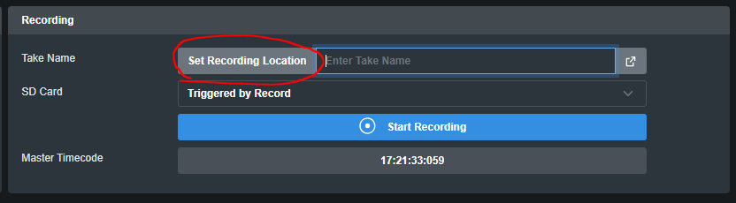
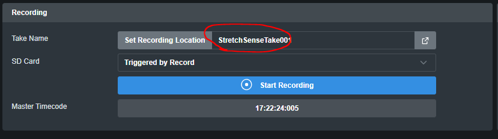
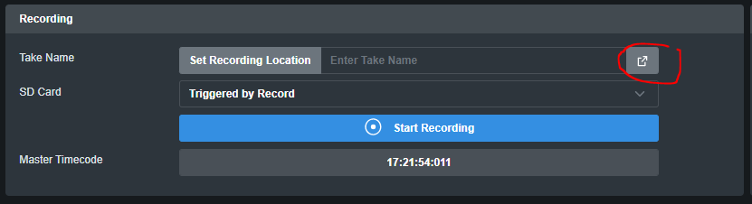
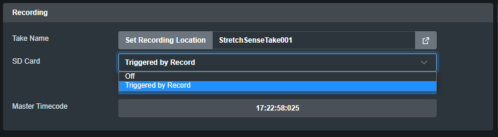
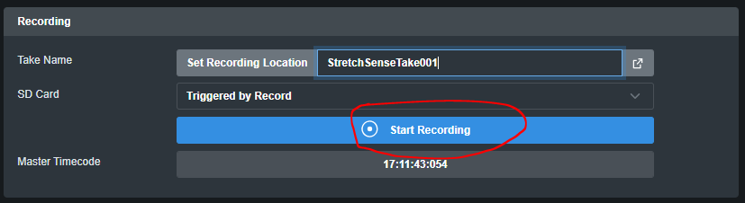
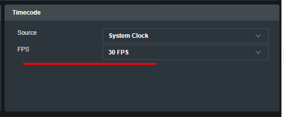
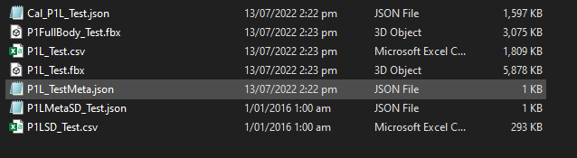
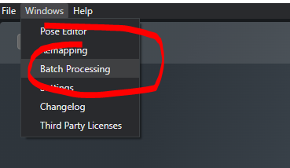
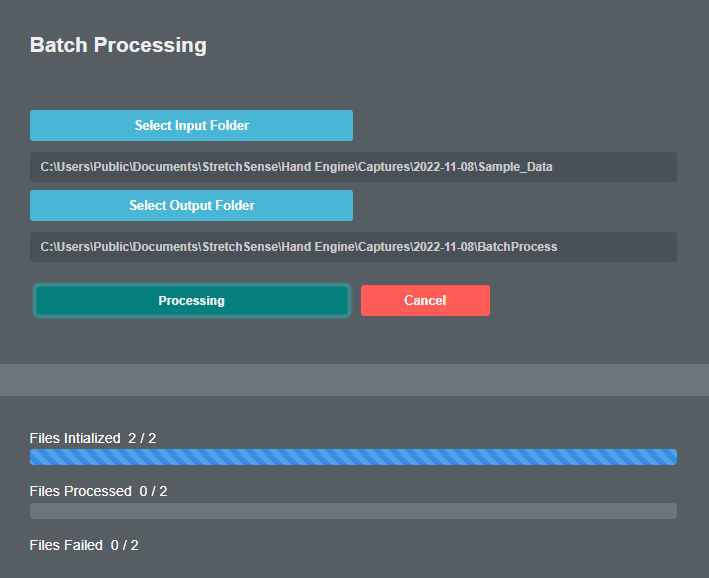

1. Recording in Hand Engine
The recording section of Hand Engine can be found at the bottom center of the interface.
Setting Recording Location:
Please click on the Set Recording Location button to set the folder you wish to save your recordings

Entering a Take Name
Next to the Set Recording Location button, you will find the field to enter your take name:

Browse Recordings
Next to the take name field, you will find a button that will open your recording location folder so you are able to browse and review your recordings:

SD Card Recording
NOTE: SD Card recording is only available for the Fidelity and SuperSplay gloves.
If you wish to also record on the SD card in your gloves, please set the SD Card option to "Triggered by Record"
Setting this option to "Off" will not instruct the gloves to start recording to the SD card.
See here for more information on reviewing and processing data recorded to an SD card.

Starting and Stopping Recording
To start recording hand animation, please click on the Start Recording button

To stop recording, please click the same button.
TIP:
Recording can be started and stopped using a remote trigger from other systems such as Vicon, OptiTrack, Vicon and Qualisys.
2. Recorded File Information
NOTE:
Hand Engine Lite does not produce FBX files from its recordings.
Recordings done within Hand Engine will produce the following files within the recording location folder you have selected:
- Calibration .json
- File Naming Convention: Cal_<Performer number><Hand Side>_<Performer Name>.json
- A calibration file is created for each hand (Left and Right) of the performer
- Full Body FBX
- File Naming Convention: <Performer number>Fullbody_<Performer Name>.FBX.
- This .FBX contains the animation of both hands attached to a full skeleton.
- Hands-Only FBX
- File Naming Convention: <Performer number><Hand Side>_<Performer Name>.FBX
- This .FBX contains the animation of one hand in a hand mesh.
- Raw Data CSV
-
- File Naming Convention: <Performer number><Hand Side>_<Performer Name>.csv
- A raw data CSV is created for each hand (Left and Right) of the performer.
- File Contains:
- Raw capacitance data of sensors (16 columns)
- Raw IMU data (if applicable) (10 columns)
- Timecode (device) = timecode on the glove, sourced from the wireless jam sync from Hand Engine. This is a string of numbers representing hours mins seconds and frames, however, the colon is missing compared to Timecode (master) (1 column)
- Timer (device) = a millisecond counter of the device from startup should just increment in 8/9ms intervals (1 column)
- Timecode (master) = Hand Engine timecode (1 column)
- Solved joint angles (labeled) (60 columns)
- Metadata File .json
- File Naming Convention: <Performer number><Hand Side>_<Performer Name>Meta.json
-
- A metadata file is created for each hand (Left and Right) of the performer
- The metadata file contains the following information:
{
"source"
"hash"
"takeName"
"startDate"
"startTime"
"performerName"
"performerNumber"
"profileName"
"calibrationId": 0,
"side": "Left",
"gloveType": "RevE",
"gloveSN": "00001369",
"gloveFW": "01.01.01",
"dongleFW": "01.01.02",
"fileName": "P1L_Adam.csv",
"outputType": "express",
"masterTimeCodeSource": "System",
"fpsRate": 60
}
3. Batch Processing Recorded Data from Local/SD Card CSV to FBX files
IMPORTANT:
- Hand Engine will use the frame rate set in the Timecode section in the main interface in the processed files. Make sure to set the FPS to the correct option BEFORE running the tool.

- Obtain the takes recorded to your SD card and copy them to your PC, if you are not using the SD card files skip to step 3.
- For Mocap SuperSplay: Remove the SD card and use a card reader to copy files
- For Mocap Fidelity:
- Turn the glove off
- Hold the power button on the glove until the LED light turns a solid green
- Plug in a micro USB cable between the glove and the PC
- The SD card storage will show up as a drive on your PC.
- Drag and drop, or copy and paste all take folders from the SD card on top of the take folders that have been saved to your local PC.
This will merge the locally recorded and SD card data into the same take folders.
Once you have merged each take folder, they will appear to contain the following (Note, this example only has data from a single left-hand glove):

Please make sure the take folder contains the files as shown above. It is important that you have the raw data files (CSV), Calibration file (CAL_*Performer*.json) and meta data files. - In Hand Engine, open the batch processing tool in the Windows menu:

- Select the input folder. This will be the folder that contains all the takes you wish to process as shown above.
- Select the output folder, this will be where the Batch Processing tool will save all your take FBX files once complete.
- Click on Export.
- The tool will initialize and start processing all the takes in the input folder you selected:

- Once complete, your output folder will have populated with a folder for each take processed, and within that folder will contain up to 3 files:
- FullBody FBX
- Left hand FBX (Hand only)
- Right hand FBX (Hand only)